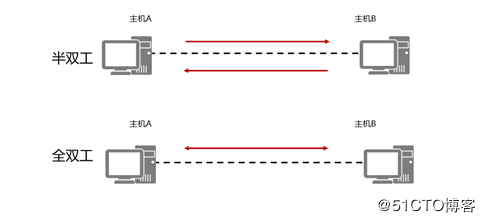

- 单工：始终只能完成一个方向的数据传输
- 半双工：同一时间只能完成一个方向的数据传输
- 全双工：同一时间可以完成两个方向的数据传输

注意：同一物理链路上相连的两台设备的双工模式必须保持一致
自协商模式下，配置双工模式
执行命令negotiation auto
缺省情况下，以太网接口的双工模式是和对端接口协商得到的。
非自协商模式下，配置双工模式
执行命令undo negotiation auto
执行命令duplex { full | half }，配置以太网接口的双工模式。
缺省情况下，以太网接口的双工模式为全双工。